De wizard van VirtualBox legt je vier schermen voor. Neem de instellingen hieronder over; wat elk van die keuzes betekent, staat bij Theorie.
Heb je het Extension Pack net geïnstalleerd, sluit VirtualBox dan af en open het opnieuw. Anders werkt het programma verder met wat het bij het opstarten geladen heeft.
Open VirtualBox en klik op Nieuw.
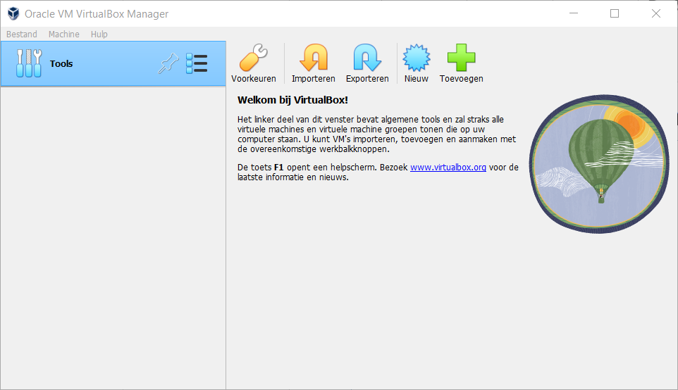
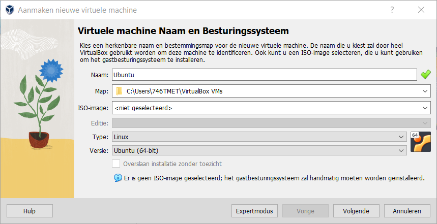
Dan staat de virtualisatie-instelling van je processor uit in de firmware van je laptop. Zet ze aan (ze heet VT-x bij Intel, AMD-V of SVM bij AMD), en zet in Windows eventueel Hyper-V uit. Vraag de lector om hulp als je er niet uit raakt. De uitleg staat op Virtuele hardware.
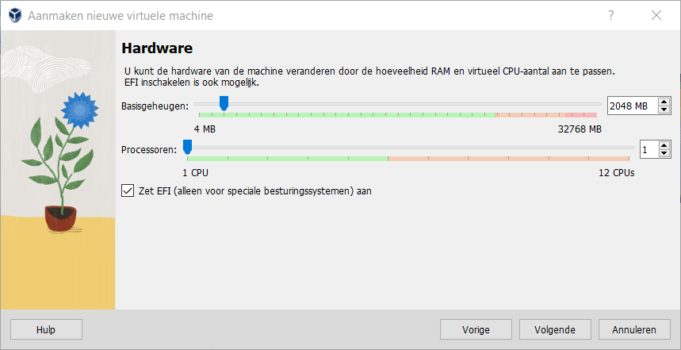
Hoeveel geheugen je hier het best geeft, en waarom dat meer uitmaakt dan het aantal processoren, staat op Schijf en geheugen. Waarvoor het vinkje EFI dient, staat op Virtuele hardware.
Geef de virtuele harde schijf een locatie en een grootte. Het vinkje eronder kiest tussen dynamische en statische allocatie.
Ubuntu zelf neemt ongeveer 15 GB in, en daar komt nog bij wat je in de labo's installeert. Die grens ligt vast zodra de machine gemaakt is, dus dit is de enige instelling die je achteraf niet meer kan veranderen.
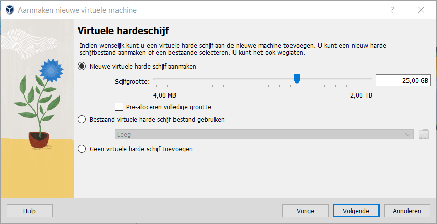
Loop het overzicht na voor je op Voltooien klikt.
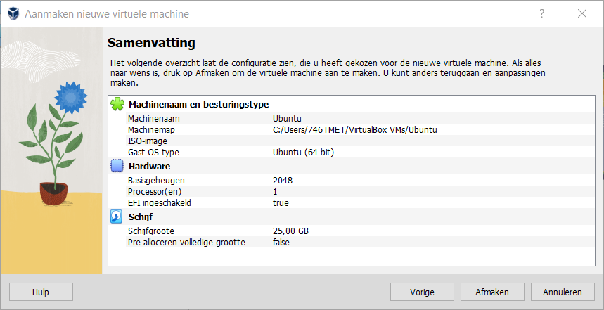
Selecteer de machine in de lijst en klik op de groene startknop.
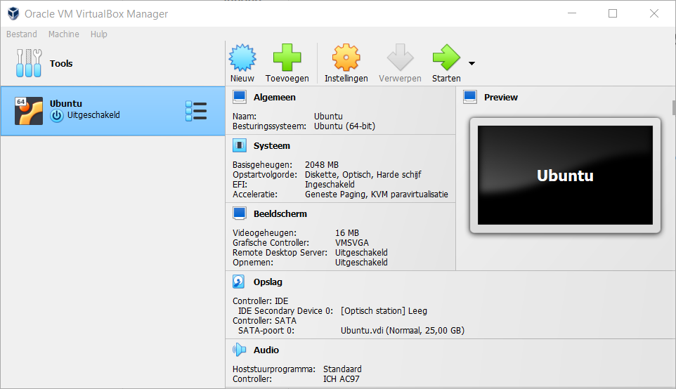
De machine vindt niets om van op te starten en vraagt een schijfbestand. Klap het lijstje open en kies Andere.
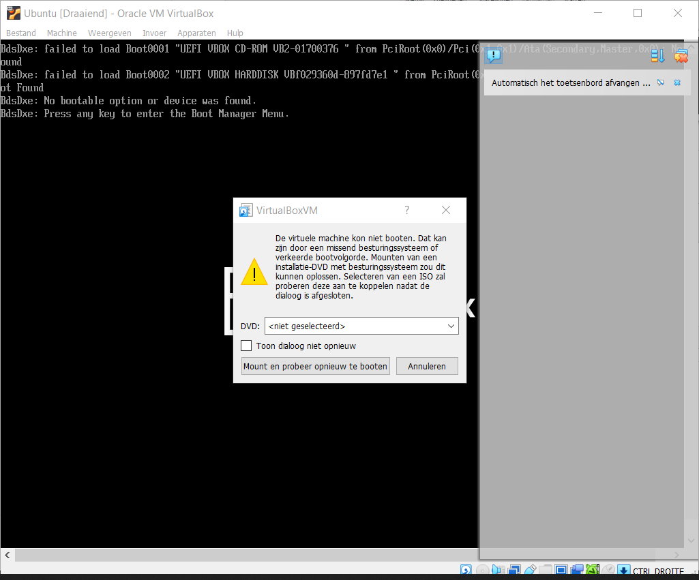
Zoek het Ubuntu-bestand op dat je gedownload hebt, met de extensie .iso.
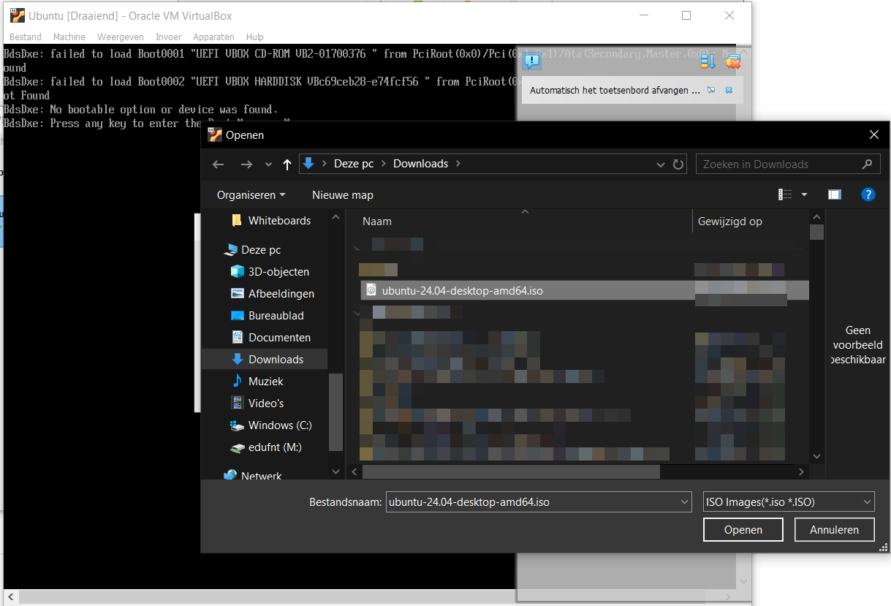
Klik op Mount en probeer opnieuw op te starten.
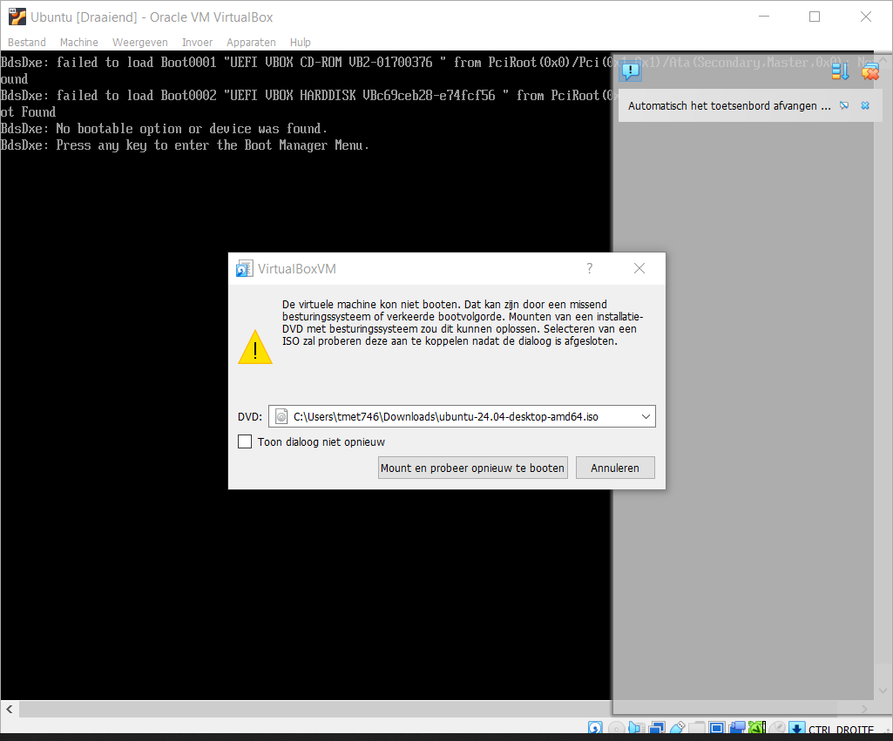
Geef de machine wat tijd. Uiteindelijk vraagt Ubuntu of je het wil uitproberen of installeren. Rechtsboven brengt Volgende je naar de installatiewizard, maar dat is voor straks: lees eerst de rest van deze pagina.
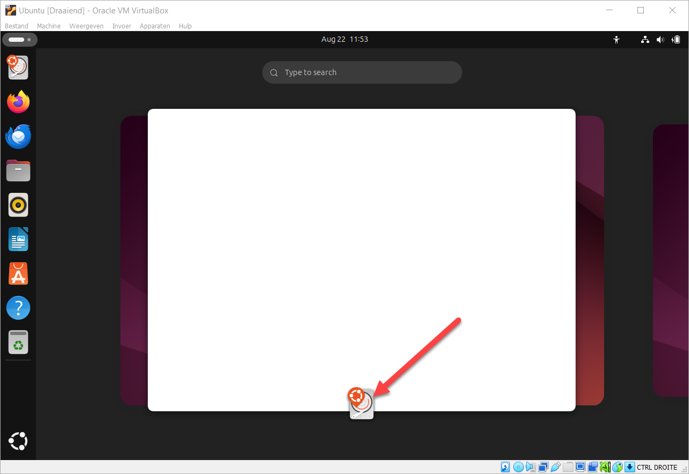
Wat een ISO-bestand is en waarom je machine ervan opstart, staat op Virtuele hardware.
Sluit de virtuele machine af en geef haar meer werkgeheugen. Te weinig geheugen is de meest voorkomende reden waarom het installatieprogramma niet tot bij dat scherm geraakt.
Draait je machine traag, dan geef je haar meer werkgeheugen. Zet haar daarvoor eerst uit.
Selecteer de machine in het hoofdvenster en klik op Instellingen.
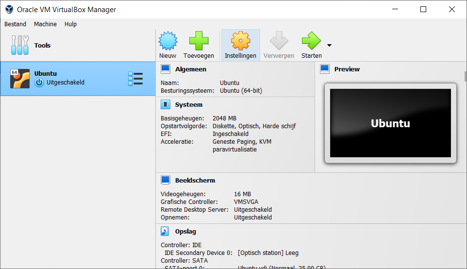
Kijk hoeveel geheugen je host nog over heeft. Druk op CTRL + ALT + DEL, open Taakbeheer en ga naar het tabblad Prestaties.
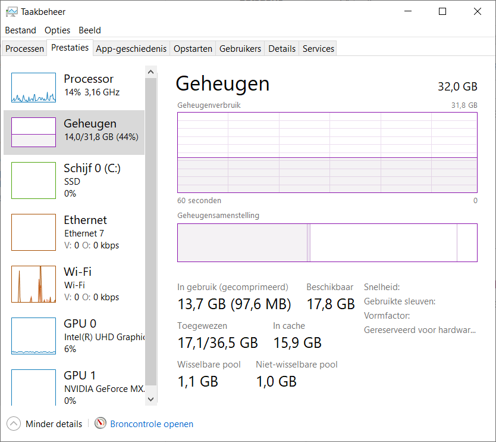
Ga naar het tabblad Systeem en verschuif het basisgeheugen.
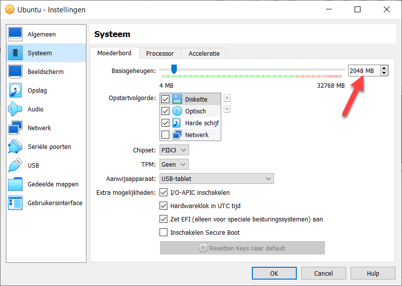
Klik op OK en start de machine opnieuw op.
Sluit het venster van de virtuele machine en kies wat er moet gebeuren. Voor een pauze neem je de staat van de machine opslaan, en om ze echt uit te zetten het shutdownsignaal sturen. Wat de derde keuze doet en wanneer je ze gebruikt, staat op Virtuele hardware.
Reageert de guest niet meer, sluit hem dan van binnenuit af. Open een terminalvenster in de virtuele machine.
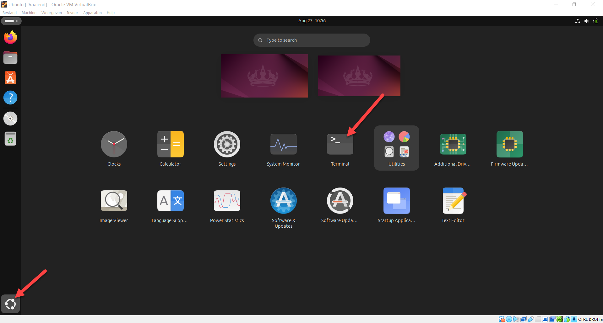
Voer het afsluitcommando uit:
sudo shutdown now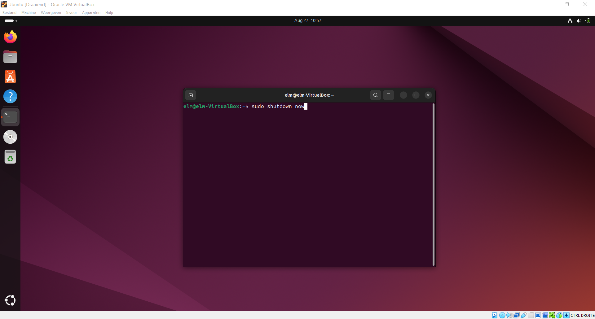